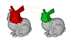

Pol Cirujeda
Hi there! I'm Pol, a Computer Scientist from Barcelona. I am addicted to learning, kind people, and fresh air. I also love maps and architecture, among other mundane passions.
If I create software today, it's because of my grandma and Lego. One of my first days at elementary school she bought me a little set of these building blocks. That opened the path of constructive hobbies and, eventually, led to computer programming (because lines of code are cheaper and limitless).
I am naturally attracted to 3D Computer Vision, computational geometry and Machine Learning, and I like to code in C++.
Our futures are dreams we had as kids turned into reality. I got a PhD in Computer Science from UPF in 2015, and I have earnt my living as an applied researcher ever since.
Today I'm part of the great team at Scaled Robotics, where we are fighting against the inefficiency and waste of resources in construction (yes, bricks and mortar buildings, housing...) via computational analysis and robotics.
- Boring bio
-
Fancy headlines
- PhD, Computer Science. 2015. Universitat Pompeu Fabra, Barcelona, Spain.
- Visiting Researcher. 2015. University of Applied Sciences of Western Switzerland.
- MSc, Computer Science, Artificial Intelligence. 2010. Universitat Pompeu Fabra, Barcelona, Spain.
- BSc, Computer Science. 2009. Universitat Autònoma de Barcelona, Spain.
Professional experience
- Yes. But I don't usually share the full CV on the first date.
Skills and interests
- 3D Computer Vision, Machine Learning, Scene Understanding and Registration
- C++, Python, ObjectiveC
- Boost, OpenCV, PointCloud Library, Eigen, ROS, ITK, VTK, CERES...
- Snowboarding, hiking, cooking and landscape and street photography
- Open sexy source
-
3D
rigid registration
covariance descriptors
game theory
matlab
A Matlab implementation of the method we presented in
IJCV 2015 and
3DV 2014.
It provides a 3D point cloud descriptor for the local definition of points and a Game Theory based approach for matching correspondences under global geometric constraints.
3D
rigid registration
C++

A no-frills implementation in C++ of a simple rigid 3D registration algorithm. Easy to integrate, uses minimal dependencies.
- Diverse divertimentos
-
odometry estimation
computer vision
C++
OpenCV
A very simple visual odometry estimator using FAST descriptors in monocular image sequences.
bioinspired
cellular automaton
game
Python
Yet another Conway's Game of Life implementation (in 10 lines of Python -or a bit more)
- Drop me a line
-
- Find me
-
LinkedIn
GitHub
Google Scholar
Researchgate
Instagram
EyeEm